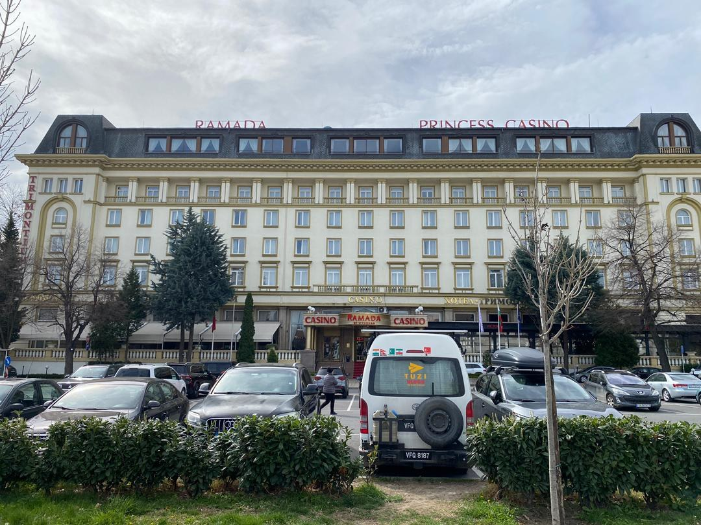

Real Story · 中文
Plovdiv：古蹟文物保护和现代化城市的结合。
25 March 2024，我来到 Plovdiv, Bulgaria。 这个城市给我的感觉很特别： 古蹟文物保护和现代化城市不是分开的， 而是一起存在。
我从下午 3pm 走到 6pm，差不多 9000 steps。 走的时候很开心，可是走完以后，身体就知道累了。
Campervan Decision
那天我更确定：有 shower / toilet / fixed bed 是对的。
走了三个小时之后，我更觉得当初决定在 campervan 里面做 shower 和 toilet 是对的。 但最重要的是 fixed bed。
因为很累的时候，我不需要再铺床、不需要再 rearrange 东西。 我只需要躺下去，然后睡。 对长途 overland 来说，这种设计不是 luxury，是恢复体力的系统。
Princess Casino Parking
弟弟叫我去试手气，我说不不不。
那晚我 overnight at Princess Casino parking lot in Plovdiv。 这个 parking 有收一点 parking fee。 我弟弟问我：“wanna go to try the luck?”
我说：“No no. Toyotaki everyday need to drink RM200 petrol, some more 95, not 97.”
Road life 已经每天在试运气了。 Petrol、parking、weather、border、repair，每一天都是另一种 casino。

English Memory Summary
A long walk, a fixed bed, and a casino joke.
On 25 March 2024, Tuzi explored Plovdiv from 3pm to 6pm, walking about 9000 steps. The city showed a strong combination of heritage preservation and modern urban life.
After the long walk, she was reminded why the campervan layout mattered: having a shower, toilet, and especially a fixed bed meant she could recover immediately without making a bed.
That night, she stayed at Princess Casino parking lot in Plovdiv. When her younger brother joked about trying her luck at the casino, she refused: Toyotaki already needed about RM200 of petrol every day — and 95, not 97.
Heart Statement
有时候，真正的幸运不是赢钱，是走完 9000 步后有一张不用铺的床。
Plovdiv gave me history and steps. Toyotaki gave me a fixed bed. That night, I did not need casino luck.